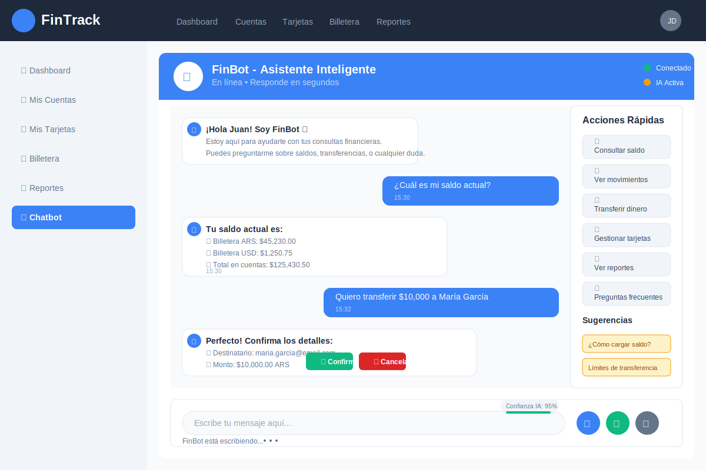

Producto: Experiencia del Usuario
Dashboard
- Visión rápida de gastos/ingresos y tendencias.
- Acceso a reportes PDF/HTML.
Tarjetas y Cuotas
- Gestión de cuotas, vencimientos y saldos pendientes.
- Alertas y recordatorios.


Roadmap y Métricas
- Integraciones bancarias y APIs de cambio USD.
- Alertas inteligentes y dashboards avanzados.
- Métricas: usuarios activos, uso del chatbot, reportes generados, tiempo ahorrado.